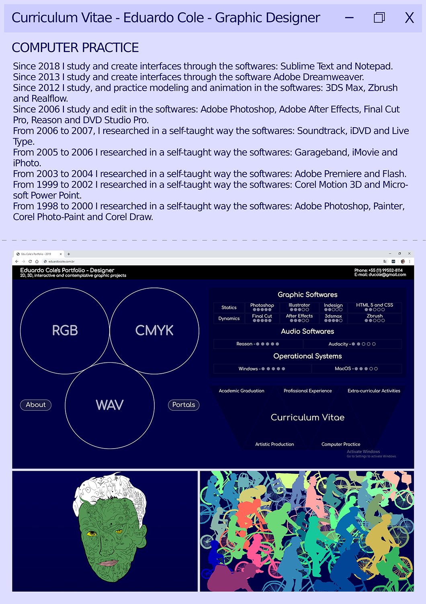
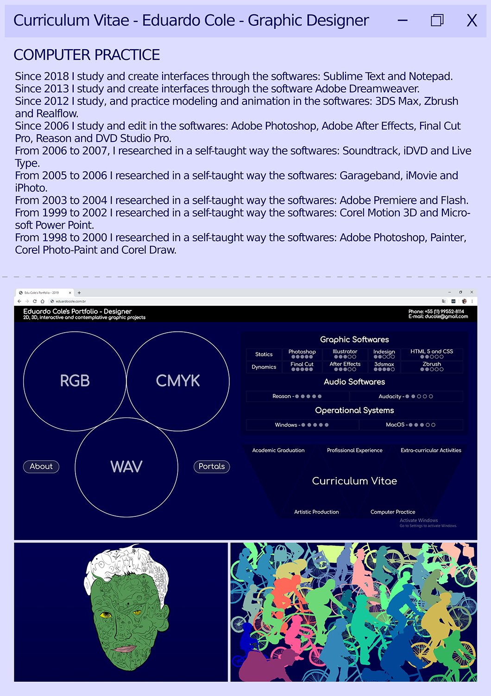

Eduardo Cole's Portfolio - Designer
Soundtracks --- WAV - The waves of the music


I would like to work with Front-End development, using HTML5 and CSS languages.
Experience with 2D ad 3D graphic projects:
- Editing of documentaries, art videos, news videos, advertisements and videos of events.
- Soundtrack creations
- Illustrations
- Brand development
- 3D Modeling
- 3D Printing
- Development of websites in HTML5, CSS and JS
Used Softwares:
Photoshop, Illustrator, Indesign, Dreamweaver, Sublime Text, Final-cut, After Effects, 3dsmax, Zbrush.
Graduation:
Graphic Design at Mackenzie graduated in 2013; with several extra-curricular activities within the area of graphic design.
Personal
My personal blog
My Youtube Channel since 2010
My Facebook
My Flickr
2C3D
Company that I created with my brother William Cole since 2016, 3D modeling and 3D printing servicesOur website
Our Giphy
Our Facebook
Bike é Legal
Portal of journalism about the bicycle
My written news
Bike é Legal's Facebook
NeoMitoSofia
Study Group about philosophy and comic books
Coauthored blog since 2009